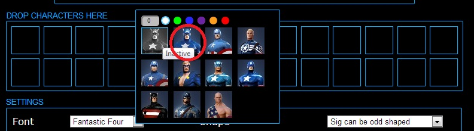
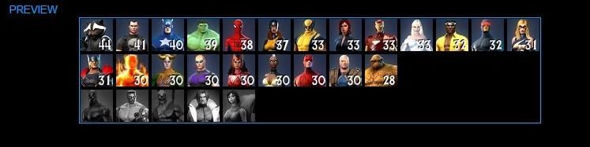

Welcome to my (admittedly crude) tool for generating a custom roster sig for Marvel Heroes.
Instructions Part 1: The Basics-
Step 1: If you have never used the site before, then you will see this when you first arrive:
For the purposes of this document, the top area (where the heroes are right now) is the "Character Pen". The area with the empty squares in it is the "Grid" and the bit at the bottom labelled "Settings" is the "Settings".
-
Step 2: For each character that you own, drag the character from the "Character Pen" to where you want it in the grid. Put you mouse pointer over the character and press down the button. Put the button where you want it in the grid and release.
-
Step 3: Click on the character you just dropped. This will open the costume menu.
-
Step 4: Enter the hero's level in the box on the top left corner. If you do not currently own a hero, leave the box blank. If you enter words or random punctuation, something will probably explode -- that's on you.
-
Step 5: If you have prestige levels on your hero...wow, good for you. To demonstrate your mastery, click the appropriate color for your hero's prestige level. In the finished sig, the level will appear in the appropriate color.
-
Step 6: Finally, click the costume that your hero is wearing (or the gray one if you want to display inactive characters). This will save your info and close the window.
 -
Step 7: Repeat this with all of your characters.
-
Step 8: At any time, press the "Preview Sig" button to see what your sig will look like.
-
Step 9: Press "Save Sig". This will set cookies on your machine, so you don't have to re-enter all of this information every time.
-
Step 10: Copy the markdown from the textbox at the bottom, and put it in your forum sig. Either select all of the text in the white box with your mouse like a neanderthal, or click in the box and hit "Ctrl-A". Then you can either right-click and select "Copy" (making you little better than an ape), or hit "Ctrl-C".

-
Step 11: To do this, first click on the little gear beneath your name on the forums.
-
Step 12: Select "Edit Profile" from the menu.
-
Step 13: Select "Signature Settings" from the menu on the left side of the screen.
-
Step 14: Delete whatever inferior sig was in the "Signature Code" previously by select all of the text and hitting delete.
-
Step 15: Paste your new, glorious sig code into the box. Then click "Save".
- Step 16: Post on the forums, comfortable in the knowledge that all who read your post will know the exact level and appearance of your entire roster. Revel in this feeling!
- Step 17: If cookies are enabled, your data should be saved; this will make it less painful to update your sig when you level up, though you will still need to copy the new markdown to the Forums. If you want to make it super-less-painful, read "Instructions Part 3".
Below the roster is a "Settings" section that I told you not to look at in Part 1. You may now look at it. There. Okay, that's enough...look away. Fill out these options and then click "Preview Sig" -- the preview and the markdown will change to reflect your settings.
You can do the following things in this section:
- Thing 1: Change the font. The default font is terrible. You can select one of a number of heroic fonts on this option. This will change the font that your level numbers are rendered with.
-
Thing 2: Change the shape of your sig. If the last row comes up with fewer characters than the preceding rows, you have two options. The default is "Sig should always be square". This will fill in the unoccupied spaces with black, like so:

If you select "Sig can be odd shaped", the row will just be clipped off, and the rest of the image will be transparent. If you have holes, they might behave oddly -- work it out.
- Thing 3: Promote this site. No doubt, people will ask "Hey, where did you get that majestic sig?" When you grow weary of answering this question, enabled the "Include a link in my sig" option to place a link to the message board thread in your sig. You will have to update the markdown (see Part 1) to complete this change.
- Thing 4: Add tooltips. Thanks to @docslax on the forums, there are tooltips! You can have no tips, tips with your level, or tips sans level. NOTE: The tips are done with HTML; if you do tips with level, you will have to update your sig on the forums each time you change it. There is, unfortunately, no way to pipe the required HTML to the forums.
- Thing 5: Set a keyword and password. This is the ultimate is sig luxury; look at the next section to get details.
By default, this page generates markdown that puts all of the sig information in the URL of the image. That means that each time you change your sig, you need to update your sig on the Forums. If you get sick of doing this, you can store your signature config in my database, and refer to it with a keyword. Then, whenever you make changes to your sig on this site, those changes are automagically reflected on the forums. To do this:
- Step 1: Type a keyword into the "Keyword" textbox. This is like a username -- a unique identifier that is linked to your keyword. If you enter one that is not unique, you will need to select a different keyword (or guess the other person's password, at which point you can overwrite their sig -- you varlet, you).
- Step 2: Type in a password. This isn't your credit card information, and you will notice that this site is not secure. Don't user a username and password that is linked to any other accounts -- I'm salting and hashing the passwords, but I don't want it on me if your car gets repossessed.
- Step 3: Click the "Save Sig" button. The sig is generated. Notice that the markdown is significantly shorter (unless your keyword is, like, 200 characters long).
- Step 4: Update your sig on the forums, as per Part 1.
- Step 5: When you level up, come here and update your sig. You will need to enter the same keyword and password, but you will notice that your sig automatically changes.
- Step 6: IF YOU FORGET YOUR PASSWORD...well, tough. Pick a new keyword and re-update your sig. Since you enabled cookies (you enabled cookies, right?), you just need to update your sig on the forums with the new keyword. This ain't your office and I ain't your network admin.
That's it! Let me know of any problems via the forums. This thread is the best place to post bug reports, feature requests, and lavish praise.
Important: Credit to @zztodd on the forums for the images; I only wrote this code and the sig-generating code, he has done all of the hard work. Additional credit to @docslax for the tooltip-generating code.